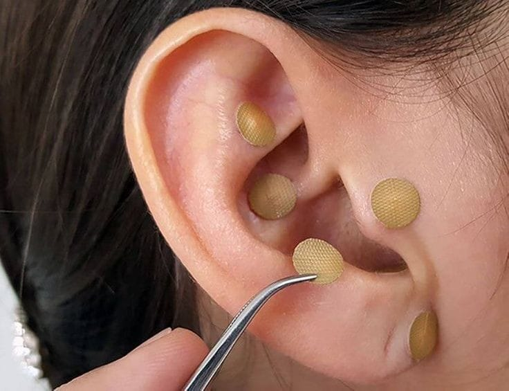

Acupuntura Auricular

A Acupuntura Auricular é uma terapia natural que consiste na estimulação de pontos nas
orelhas que refletem em todo o corpo, sendo utilizada para tratar diversos problemas físicos e emocionais.
O tratamento com a Auriculoterapia promove alívio de dores e sintomas de doenças físicas, psicológicas,
emocionais e energéticas atuando diretamente no reequilíbrio funcional, seja ele físico ou não.
Usada como uma Terapia Complementar, ela apresenta uma contribuição muito positiva em tratamentos
alopáticos e qualquer outro acompanhamento Terapêutico.
Limpeza de Crenças e Padrões
A técnica Barras de Access ® estimula 32 pontos de energia que temos ao redor da nossa cabeça.
Cada ponto tem relação com algum aspecto de nossa vida, como: criatividade, sexualidade, dinheiro,
sonhos, controle, poder, tristeza, paz, alegria e calma, entre outros.
O estímulo desses pontos resulta em uma alteração momentânea da frequência cerebral e mental,
que provoca relaxamento profundo, e promove a limpeza de crenças e padrões enraizados no subconsciente.
Com esta técnica, é facilmente possível experimentar diferenças positivas e significativas no nosso modo de agir,
pensar e sentir. A prática da Barras de Access ® possibilita grandes mudanças de vida.
Leitura Energética com Tarot
O Tarot tem como objetivo trazer clareza, seja na caminhada do Autoconhecimento,
ou seja no Conselho para situações mais complexas.
O Tarot Terapêutico nos estimula a analisar energias e fatos da vida,
e na busca de um direcionamento, promove clareza dos caminhos, para que tomemos as melhores decisões e direções.